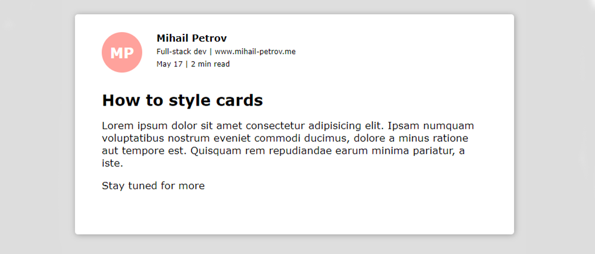
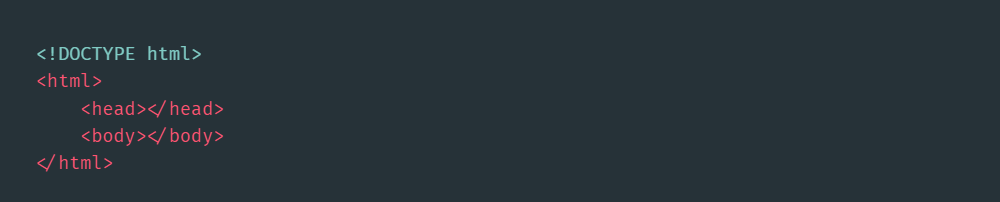
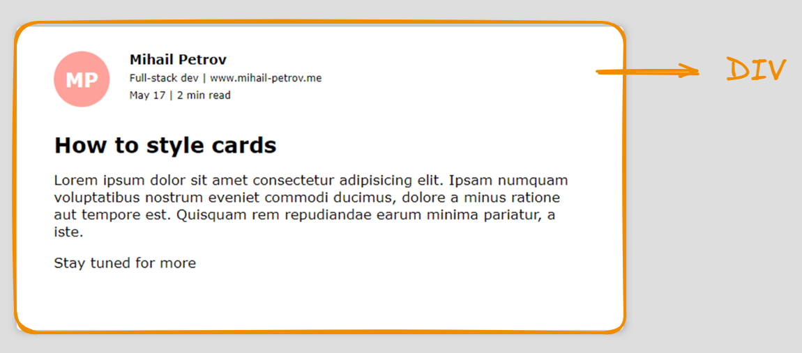
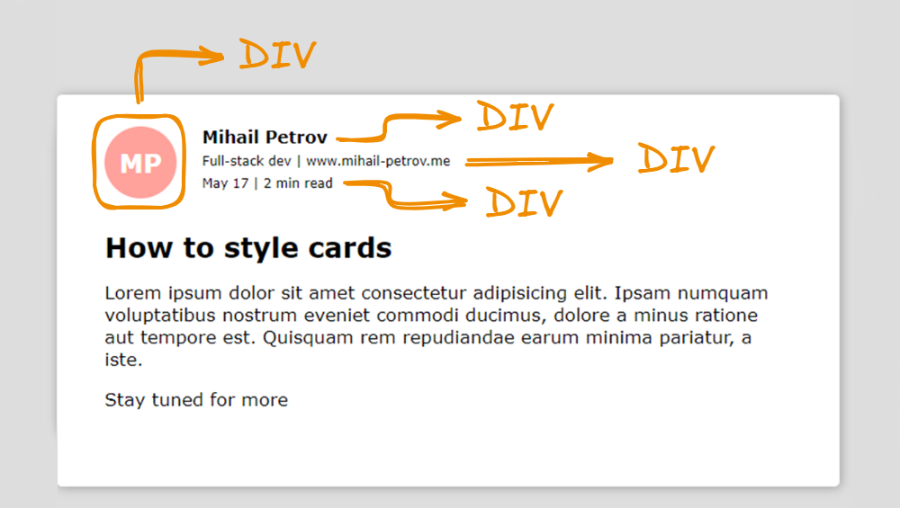
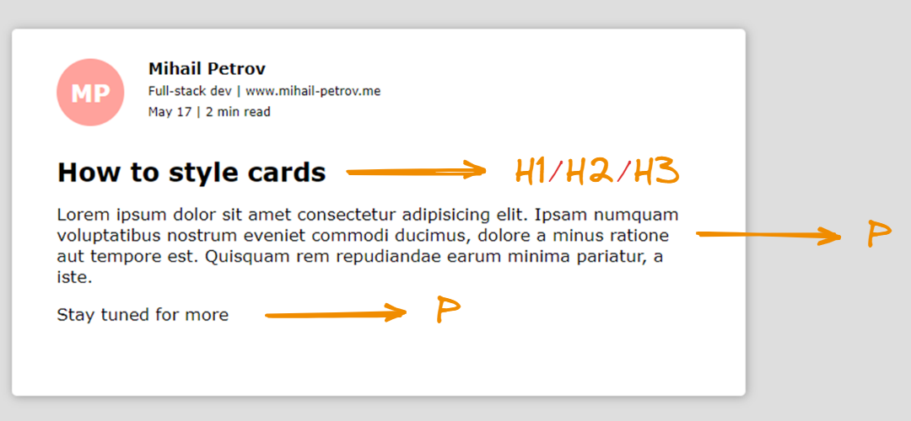
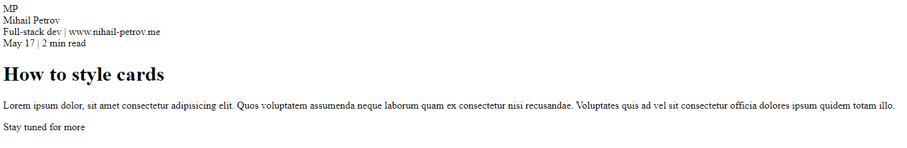
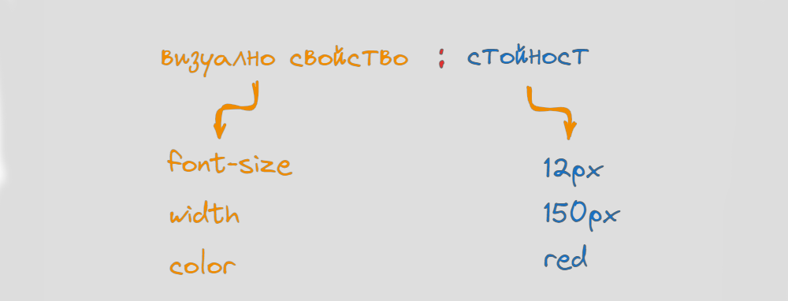

Основни стилови правила в CSS - част 1
След като вече знаем, как да създаваме HTML документи, както и да ползваме основните структурни елементи, е вече време да превръщаме скучния текст, в красиво и структурирано произведение на изкуството.
По какво ще работим ?
Ще започнем с доста базова визуална компонента, която от своя страна ще съдържа всичко необходимо за да симулираме често срещано в уеб приложенията карта със съдръжание. Тази карта може да е пост от социална мрежа, статия или E-mail които съдържа полезна препратка към по голям текст.

Първата ни задача е да създадем подходяща структура на документа който виждаме а след това да го стилизираме с подходящите CSS правила.
HTML структура на документа
Ще започнем със създаването на базов HTML документ, в които ще налеем съдържанието на контролата. На този етап ще се придържаме към напълно минимална структура на документа.

Нека да набележим всеки един от елементите, които виждаме в рамките на изображението и да предположим какви ще бъдат подходящите HTML елеменети, които ще съдържат текста или съдържанието.
Ще започнем с важния въпрос. Къде се намира същинското съдържание на контролата. Всички текстови елементи “живеята” в рамките на определен блок, който в случая можем да дефинираме като обикновен DIV

Както вече коментирахме, всеки път когато нямаме кристално ясна идея къде да сложим, нашето съдържание, можем да ползваме DIV елемента. Особено ясно си проличава ролята му, като стандартен контейнер за съдържание.
.png)
Нека да обърнем внимание на тази част от картата, която показва информация за потребителя, който е създал съдържанието. Тя съдържа следните елементи
- сигнатура (инициали), на потребителя - MP
- Името на потребителя - Mihail Petrov
- Допълнителен текст.
Можем лесно да идентифицираме всеки една от тези елементи, като обикновен текстов контейнер, който също ще дефинираме с DIV

.png)
Доста по лесно е да идентифицираме текстовите елементи, които представят основното съдържание в картата като:
- заглавието на статията
- отделните параграфи, от които тя се състоия.

Подобно на стандартен документ, можем лестно да идентифираме подходящите тагове, които са H1/2/3 за заглавието и P тагове за отделните параграфи.
Резултатния документ, които получихме изглежда по следния начин.

Първи опити за стилизация
Време е да добавим малко красота към направения документ, като малко по малко въведем концепцията за CSS правила. На кратко, CSS представлява набор от стилови правила, с които можем да кажем на браузъра как да визуализира определен HTML елеменет. Някой от аспектите, коието можем да стилизираме са:
- характеристики на текста и шрифта като цяло;
- цветове и контрасти;
- физически характеристики на елементите - отстояния, височина, широчина;
- позициониране на елементите;
- анимации и визуализации.
За да променим визуалната характеристика на произволен елемент е необходимо да знаем свойството което променяме, както и да му зададем подходяща стойност.

Визуалните свойства са доста повече от представените на примера, но доста често те са групирани или организирани около идеята, която те обслужват.
Как можем да стилизираме елементите ?
Най лесния начин да стилизираме даден елемент е като ползваме атрибута style, който е наличен в рамките на всеки един HTML елемент, който можем да позиционираме в body-то на нашия документ.